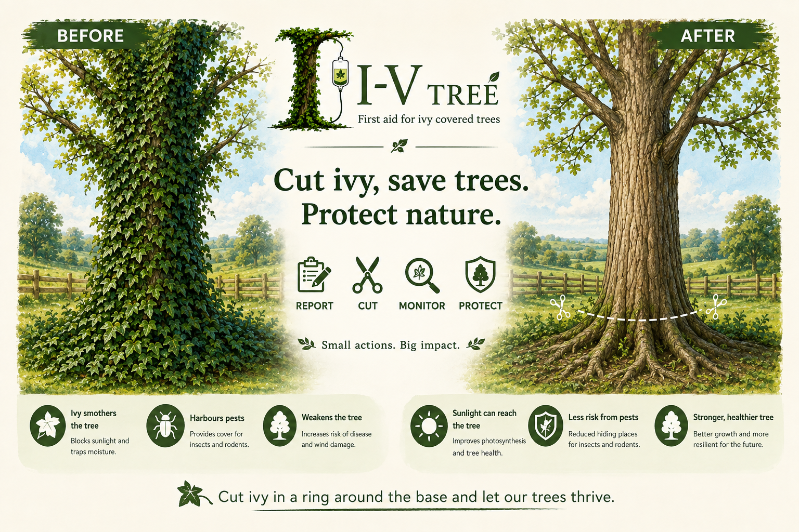

Protect Trees from Invasive Ivy
IV Tree helps local communities report ivy-covered trees so they can be monitored and protected.
📍 Find
Locate an ivy-covered tree in your local area.
📷 Report
Submit a report with photographs and location details.
🌳 Protect
Help communities monitor trees and reduce invasive ivy.
Why Removing Ivy Matters
Heavy ivy growth can cover a tree, reduce the light reaching it and provide hiding places for pests. Removing ivy from around the base can help the tree remain healthy.

Reported Trees
0 reports
No reports have been submitted yet.